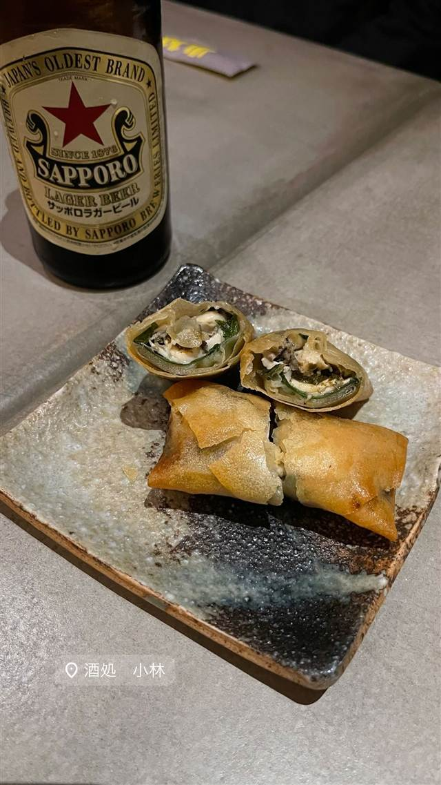
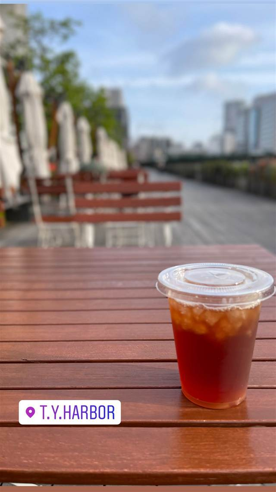
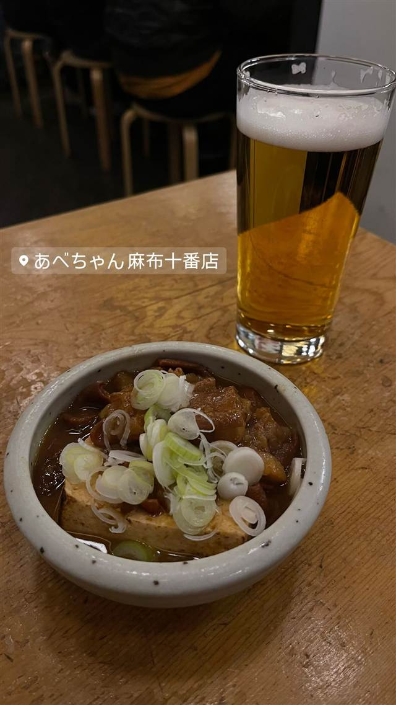

酒処小林 代々木上原
古い木造家屋をモダンに改装した店内で味わう小料理
酒処 小林
代々木上原駅からほど近い、木造建築をモダンにアレンジした店内が印象的な居酒屋。ビールや日本酒、ナチュラルワインと小料理を楽しめる。
TRIVIA
豆知識
- 築年数の古い木造家屋をモダンにリノベーションした店内が特徴
REVIEWS
世間の評判
3.46食べログ
和モダンな空間とだし巻き卵の味
- 刺身盛り合わせやだし巻き卵など出汁の効いた味を評価する声が多い
- コンクリート打ちっぱなしの和モダンな空間をデート向きと評価する声がある
- 価格は高めでも満足度が高いという声がある一方で料理数の少なさを指摘する声もある
- 満席で予約が取りづらいことや接客の落ち着きのなさを指摘する声もある
食べログ 口コミ460件
| どこから | 都心 |
|---|---|
| 予算 | 夜 ¥3,000～¥3,999 |
| 場所 | 代々木上原 東京都渋谷区西原3-6-1 |
| メモ | 代々木上原駅徒歩1分、月曜定休 |
食べたもの：春巻きとビール
NEARBY
近い店・同じ系統の店
-
 ★
二郎系(インスパイア) 東北沢駅／駒場東大前駅
千里眼（センリガン）
夏季限定の冷やし中華も人気の二郎系インスパイア
昼 ～¥999 夜 ～¥999
★
二郎系(インスパイア) 東北沢駅／駒場東大前駅
千里眼（センリガン）
夏季限定の冷やし中華も人気の二郎系インスパイア
昼 ～¥999 夜 ～¥999
-
 ブランチ 代々木上原
GOOD TOWN BAKEHOUSE
ベリーたっぷりパンケーキとプリンが名物のベーカリーカフェ
昼 ¥1,000～¥1,999 夜 ¥3,000～¥3,999
ブランチ 代々木上原
GOOD TOWN BAKEHOUSE
ベリーたっぷりパンケーキとプリンが名物のベーカリーカフェ
昼 ¥1,000～¥1,999 夜 ¥3,000～¥3,999
-
 とんかつ 代々木上原
とんかつ武信 代々木上原店
川崎の本店からのれん分け、米油で揚げる特ロースかつと醤油かつ丼
昼 ¥1,000～¥1,999 夜 ¥1,000～¥1,999
とんかつ 代々木上原
とんかつ武信 代々木上原店
川崎の本店からのれん分け、米油で揚げる特ロースかつと醤油かつ丼
昼 ¥1,000～¥1,999 夜 ¥1,000～¥1,999
-

クラフトビール 天王洲アイル駅 T.Y.HARBOR 天王洲の築50年超倉庫を改装、自家醸造の西海岸スタイルクラフトビール 夜 ¥5,000～¥5,999 -

クラフトビール 麻布十番 あべちゃん 麻布十番店 90年以上続く老舗、3つの大鍋で仕込む牛もつ煮込み 夜 ¥4,000～¥4,999 -
 クラフトビール 東京駅
NIHONBASHI BREWERY. T.S（日本橋ブルワリー 東京ステーション）
米ポートランドの人気醸造所監修レシピのクラフトビール
昼 ¥1,000～¥1,999 夜 ¥4,000～¥4,999
クラフトビール 東京駅
NIHONBASHI BREWERY. T.S（日本橋ブルワリー 東京ステーション）
米ポートランドの人気醸造所監修レシピのクラフトビール
昼 ¥1,000～¥1,999 夜 ¥4,000～¥4,999
ONSEN & SAUNA